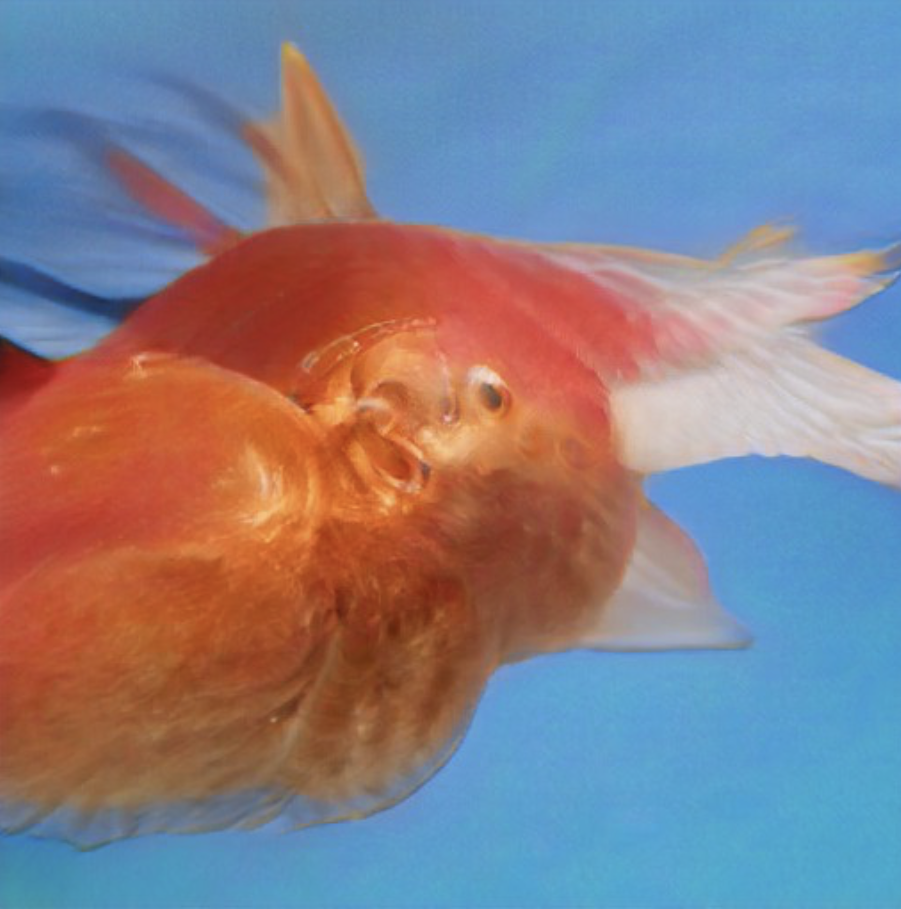
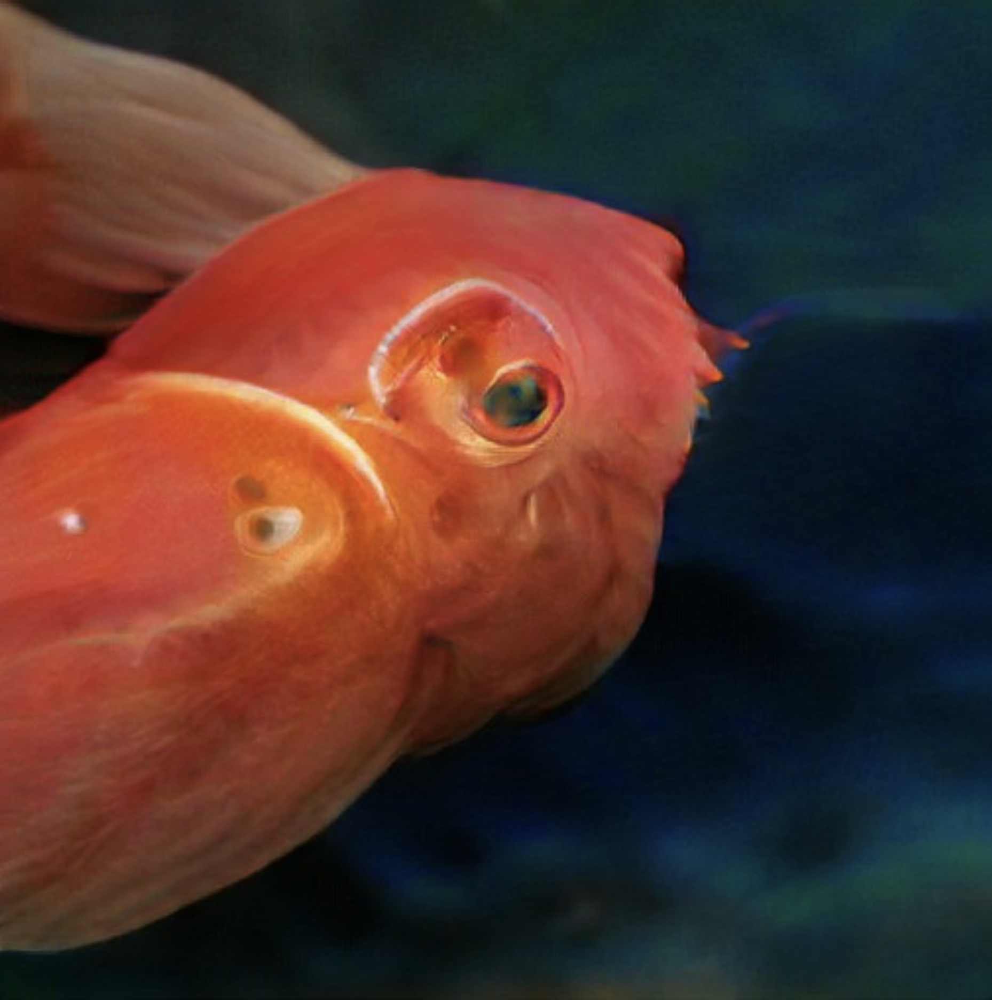

5219
Odontodactylus scyllarus
Kingdom: Animalia
Phylum: Arthropoda
Subphylum: Crustacea
Class: Malacostraca
Order: Stomatopoda
Family: Odontodactylidae
Genus: Odontodactylus
Species: O. scyllarus
“Odontodactylus scyllarus, commonly known as the peacock mantis shrimp, harlequin mantis shrimp, painted mantis shrimp, clown mantis shrimp or rainbow mantis shrimp, is a large stomatopod native to the epipelagic seabed across the Indo-Pacific, ranging from Guam to East Africa. In the marine aquarium trade, it is both prized for its attractiveness and considered by others to be a dangerous pest.
O. scyllarus is one of the larger, more colourful mantis shrimps commonly seen, ranging in size from 3 to 18 cm (1.2 to 7.1 in). They are primarily green with orange legs and leopard-like spots on the anterior carapace.Their ability to see circularly polarised light has led to studies to determine if the mechanisms by which their eyes operate can be replicated for use in reading CDs and similar optical storage devices.
Odontodactylus scyllarus is a burrower, constructing U-shaped holes in the loose substrate near the bases of coral reefs in water ranging from 3 to 40 metres (9.8 to 131.2 ft) deep. O. scyllarus is a smasher, with club-shaped raptorial appendages. An agile and active predator, it prefers gastropods, crustaceans and bivalves, and will repeatedly deliver blunt force to the exoskeleton of its prey until it can gain access to the underlying soft tissue for consumption.It is reported to have a "punch" of over 50 miles per hour (80 km/h), the fastest recorded punch of any living animal. The acceleration is similar to that in a .22 LR bullet fired from a handgun (accelerations of over 100,000 m/s2 or 330,000 ft/s2, and speeds of over 20 m/s or 66 ft/s), with each strike packing 1,500 N (340 lbf) of force.


Copyright 2021 by Nouveaux Specimens.
All Rights Reserved.